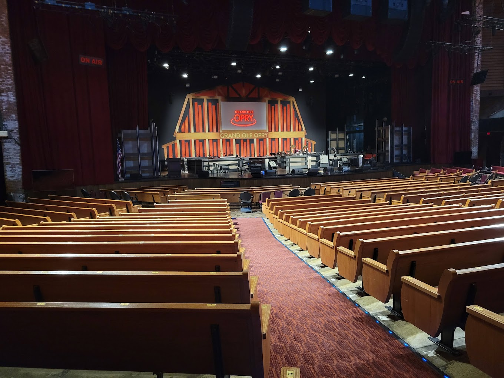

Time Squares NYC

This is Time Squares in New York City, New York. It is normally always very crowded. There are a lot of skyscrapers and popular movie ads on the skyscrapers. It's busy with a lot of shops. It is one of the most popular destinations in New York City. People get here through subways, buses, etc.
Sometimes there can be a long line to enter a store. They sell Disney stuff and I Love NY clothes and gifts. It is lively and crowded during the night and day. There are many food stalls and many great shopping places.
Broadway in Nashville
Nashville is known as a music city. Broadway clearly display that reputation through the lively bars and live music from day to night. During the night, Broadway is still full of people and noises coming from the live music performances.
Broadway is one of the most visited tourist site at Nashville. It is located in downtown Nashville. There are many gift shops and restaurants that give you a taste of Nashville. In addition, it is close to some of Nashville's other famous tourist sites.
Vanderbuilt University

Vanderbuilt is one of the well-known universities in Nashville. Nearby is the Centennial Park, which locates the Parthenon. Within the image, there is a bell tower and campus buildings. This is a beautiful view of Vanderbuilt during sunrise.
There are undergraduate and graduate buildings on campus. There's also on-campus dorms. In the far view of the image, we can see the city structure of Nashville and various housings. The image seems to be taken during spring or summer since the leaves are vivid and green.
Cheekwood Arboretum

There are all sorts of color in the spectrum that shows up in this image. It reminds me of summer when I visited this place. It was really hot at that point and we saw many different types of plants and flowers, similar to this photo.
Cheekwood is a large arboretum consisting of multiple gardens and even a huge mansion. There are garden other countries and gardens named after the plants' names.
Parthenon in Nashville

The picture is taken during the night, which shows the Parthenon golden. The building lights up when it gets dark so it's easy to spot. During the day, it looks like the Parthenon in Athens, Greece because it was constructed to look like it.
Inside, there's some statues, including the big golden statue of Athena with her shield. There are signs explaining Greek Mythology. There are two floors.
Grand Ole Opry
This is a popular site to listen to some live performances. Many groups from around the nation come to perform. The performance is usually 2 hours long. They have performances that express Nashville's culture through country music.
An hour in the performance, they would normally have a break and allow people to tour the backstage. They have great country music stars playing bass guitar, guitar, mandarin, piano, etc.
Fujian, China
I took this picture sometime in July in 2023. It was a view of Fuzhou, which is in southeast China. Fuzhou is city in Fujian, China which borders the ocean.
Likes
- index.html
- travel.html
- recipes.html